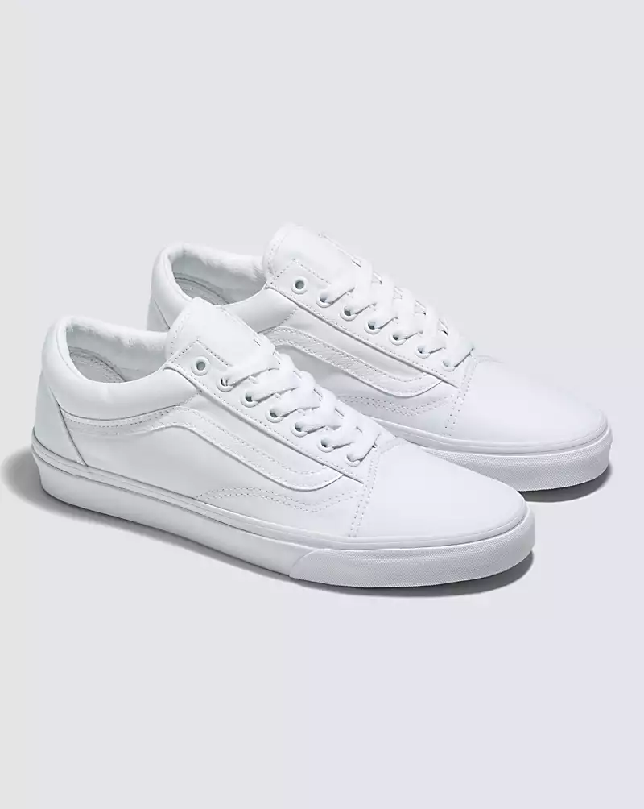

|  | Shoe Background:The Iconic Shoe that Brought our Sidestripe to Life: This is the Old Skool.The Old Skool was our first footwear design to showcase the famous Vans Sidestripe—although back then, it was just a random doodle drawn by founder Paul Van Doren. Since its debut in 1977, this low-top silhouette has established itself as an icon in the skate, music, and fashion scenes. From 90s street skaters and punks to current hip hop and fashion legends, the Old Skool Cavnas has consistently been the go-to shoe for creatives who do things their own way. Color Style:-White If you want to buy this Item Just go to:Vans Philippines |